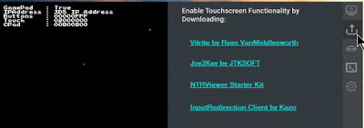
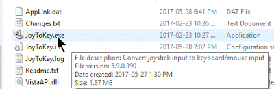
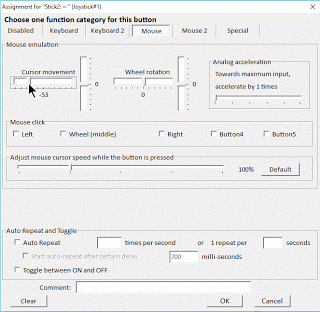
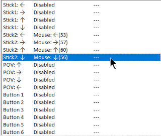
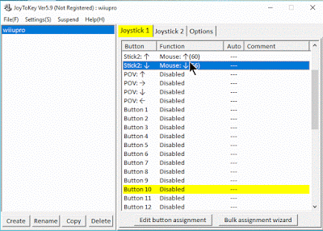

<!DOCTYPE html PUBLIC "-//W3C//DTD XHTML 1.0 Transitional//EN" "http://www.w3.org/TR/xhtml1/DTD/xhtml1-transitional.dtd">
<html xmlns="http://www.w3.org/1999/xhtml">

<head>
<meta content="text/html; charset=utf-8" http-equiv="Content-Type" />
<title>Setting Up Joy2Key for Gamepad M</title>
<style type="text/css">
.auto-style1 {
	font-family: "Segoe UI", Tahoma, Geneva, Verdana, sans-serif;
}
.auto-style2 {
	font-size: 24pt;
}
.auto-style3 {
	font-size: 20pt;
}
.auto-style4 {
	text-align: left;
}
.auto-style5 {
	text-decoration: underline;
}
.auto-style6 {
	font-size: 12pt;
}
</style>
</head>

<body>

</body>

</html>
<div class="auto-style1">
	<span class="auto-style1">
<span class="auto-style3">Setting Up <strong>Joy2Key</strong> for Gamepad Mouse Control 
	(part 3)</span></span><br class="auto-style14" />
	</div>
	<div class="auto-style4">
	<span style="font-size: x-small;">Joy2key can map near any gamepad to keyboard/mouse Inputs</span><br />
<span style="font-size: x-small;">(useful when games only have keyboard controls, you can map buttons to those keys and have a working gamepad)</span><b><u><span style="font-size: large;"><br /></span></u></b>
		<hr /><br />
</div>
	If you are lazy like me, instead of leaning over to <u>use the Touchscreen on the 
		<b>3DS</b></u>&nbsp;</div>
<div>
- You'd <b>rather <u>route the Second Joystick of your controller</u></b> to the <b><i>Mouse + Left Click</i></b> <u>on your PC</u></div>
<div>
<br /></div>
<div>
	<hr />
<br /></div>
<div>
<b>Input Redirection &amp; Joy2Key</b><em><span class="auto-style5"> both Natively Support</span>
	</em><b>XInput Controllers (Xbox One + 360).</b></div>
<div>
</div>
<div class="auto-style1">
This means we can <b>easily use any controller</b> thanks to:</div>
<div class="auto-style1">
<a href="http://ds4windows.com/">ds4windows.com</a> - Turn <u><i>Dualshock Controllers into <b>XInput</b></i></u></div>
<div class="auto-style1">
<a href="http://wiinupro.com/">wiinupro.com</a> -<i><u> WiiU + Wii Controllers</u></i> to <b>XInput (<a href="https://gameincanada.blogspot.ca/2017/04/emunews04-22-2017-wiinusoft-gets-new.html" target="_blank">Tutorial here</a>)<br />
	</b><hr />
</div>
<div>
<br />
<ul>
<li><b>Download Joy2Key.zip</b> from <i><b>kit-kat-touch's Download Tab</b></i></li>
</ul>
<div class="separator" style="clear: both; text-align: center;">
<a href="https://4.bp.blogspot.com/-f9oCnu5nxD0/WSzCzVho9FI/AAAAAAAAA78/KebGfCpkP2UyKJqJQWH3navwqT-hRXLawCLcB/s1600/177.gif" imageanchor="1" style="margin-left: 1em; margin-right: 1em;">
	</a></div>
<ul>
<li><b>Extract</b> &amp; <u><i>Open</i></u> <b>Joy2Key.exe</b></li>
</ul>
<div class="separator" style="clear: both; text-align: left;">
	</div>
<div class="separator" style="clear: both; text-align: center;">
<a href="https://1.bp.blogspot.com/-7s9_Nqnf734/WSzEoe2gnNI/AAAAAAAAA8I/fu0aX7Ot1gEHkgcTrUWa-1ytJwFAvE0UQCLcB/s1600/178.gif" imageanchor="1" style="margin-left: 1em; margin-right: 1em;">
	</a></div>
<div class="separator" style="clear: both; text-align: center;">
<br /></div>
<div class="separator" style="clear: both; text-align: center;">
	<hr />
</div>
<ul>
<li style="text-align: left;">Click the <i><u>Options Tab</u></i>&nbsp;</li>
<li style="text-align: left;">Click <u>Configure</u>&nbsp;</li>
<li style="text-align: left;">Click<b>&nbsp;"2. Advanced settings for each device"&nbsp;</b>- to find your&nbsp;<b>XInput Device</b></li>
</ul>
<div class="auto-style15">
&nbsp; (if using WiinUSoft or ds4windows make sure you pick XInput Device not 
	your Dualschock or Nintendo Gamepad)</div>
<br />
<div class="separator" style="clear: both; text-align: center;">
<a href="https://3.bp.blogspot.com/-unEJ4tglaFA/WSzEokmxrrI/AAAAAAAAA8Y/fu8SK0vHHFoLlj6ERv425l0j5MRl9pcTgCLcB/s1600/183.gif" imageanchor="1" style="margin-left: 1em; margin-right: 1em;">
	</a></div>
<div class="separator" style="clear: both; text-align: center;">
<br /></div>
<div class="separator" style="clear: both; text-align: center;">
To turn a <b>Joystick</b> into <u>Mouse Inputs</u> we need to change <b>Stick2</b> to <b><i>Mouse Directions</i></b></div>
<div class="separator" style="clear: both; text-align: center;">
</div>
<ul>
<li style="text-align: left;">Select <b>Stick2</b> and <u><i>the Direction you need</i></u></li>
<li style="text-align: left;">Click <b>Edit Button Assignment</b></li>
</ul>
<br />
<div class="separator" style="clear: both; text-align: center;">
<a href="https://2.bp.blogspot.com/-w_ahBxj1yX8/WSzEoUFWXwI/AAAAAAAAA8U/rTWfa9I7eTEH96Qf4gFM-TJlKkGh44kQACLcB/s1600/179.gif" imageanchor="1" style="margin-left: 1em; margin-right: 1em;">
	</a></div>
<div class="separator" style="clear: both; text-align: center;">
<br /></div>
<ul>
<li>Click the <b>Mouse Tab&nbsp;</b></li>
<li>Slide the <b>Curser movement needles</b> in the <i><u>Corresponding Direction</u></i> of <b>Stick2</b></li>
</ul>
<br />
<div class="separator" style="clear: both; text-align: center;">
<a href="https://3.bp.blogspot.com/-bQA8RHNXbGQ/WSzEobe1R0I/AAAAAAAAA8M/htQPo20O43g-hjeG0qj64i0zgZQmc14ggCLcB/s1600/180.gif" imageanchor="1" style="margin-left: 1em; margin-right: 1em;">
	</a></div>
<div class="separator" style="clear: both; text-align: center;">
	</div>
<ul>
<li style="text-align: left;"><b>Repeat for All 4 Directions</b></li>
	<li style="text-align: left;"></li>
</ul>
<div class="separator" style="clear: both; text-align: center;">
<a href="https://4.bp.blogspot.com/-kRnoDeA8WmI/WSzEoqWUd_I/AAAAAAAAA8Q/fI99kXGPqJAedj_QJmEP79I7skNEKQkWgCLcB/s1600/181.gif" imageanchor="1" style="margin-left: 1em; margin-right: 1em;">
	</a></div>
<br />
<div class="auto-style2">
Now we need to <u>Select a Button</u> to <i>Register as</i> <b>Mouse Clicks/Stylus Taps</b></div>
<div style="text-align: center;">
<b><br /></b>
<b>Pressing the Button</b> you <i><u>Want to Use</u> as </i>
	<span class="auto-style16">Stylus Taps</span><b><i>&nbsp;</i></b></div>
<div class="separator" style="clear: both; text-align: center;">
<i style="font-weight: bold;">- </i>will register as a <b>a Highlighted Yellow Button</b></div>
<br />
<div class="separator" style="clear: both; text-align: center;">
<a href="https://2.bp.blogspot.com/-T-VlGxt7zTg/WSzWbo3IwVI/AAAAAAAAA9A/3xeCtTX-Aj0FkiPUpWyC5etkJb9qByrEQCLcB/s1600/190.gif" imageanchor="1" style="margin-left: 1em; margin-right: 1em;">
	</a></div>
<ul>
<li style="text-align: left;"><b>Click Said Button Number </b>(10 in my Case)</li>
<li style="text-align: left;"><b>Click "Edit Button Assignment"</b></li>
</ul>
<div class="separator" style="clear: both; text-align: center;">
<a href="https://3.bp.blogspot.com/-x1i9uV9LIew/WSzEo-q7rrI/AAAAAAAAA8o/AnMre5RNC5s26XHx4qSMrPkyLXIKlvmCACLcB/s1600/187.gif" imageanchor="1" style="margin-left: 1em; margin-right: 1em;">
	</a></div>
<ul>
<li>Select <u style="font-weight: bold;">Left</u><b> Mouse Click </b>under the <b><i>Mouse Tab</i></b></li>
</ul>
<div class="separator" style="clear: both; text-align: center;">
<a href="https://1.bp.blogspot.com/-b10A0WTtH9s/WSzEo5cusrI/AAAAAAAAA8s/MbtzzTz4_2wHbozuwUKcENu2V90SVEv5QCLcB/s1600/188.gif" imageanchor="1" style="margin-left: 1em; margin-right: 1em;">
	</a></div>
<ul>
<li style="text-align: left;"><b>Click Ok and Minimize Joy2Key to the taskbar&nbsp;</b></li>
</ul>
<div class="auto-style17" style="clear: both; text-align: center;">
Your Gamepad Should now Control your Mouse - Allowing you to:</div>
<div class="separator" style="clear: both; text-align: center;">
	- C<b>lick kit-kat-touch's InputRedirectionClient Window (Hovering over NTRViewer's Touchscreen) without getting up!<br />
	<br />
	</b></div>
<p class="auto-style2" style="box-sizing: border-box; margin-top: 0px; margin-bottom: 16px; color: rgb(36, 41, 46); font-family: -apple-system, BlinkMacSystemFont, &quot;Segoe UI&quot;, Helvetica, Arial, sans-serif, &quot;Apple Color Emoji&quot;, &quot;Segoe UI Emoji&quot;, &quot;Segoe UI Symbol&quot;; font-size: 16px; font-style: normal; font-variant-ligatures: normal; font-variant-caps: normal; font-weight: normal; letter-spacing: normal; orphans: 2; text-align: start; text-indent: 0px; text-transform: none; white-space: normal; widows: 2; word-spacing: 0px; -webkit-text-stroke-width: 0px; text-decoration-style: initial; text-decoration-color: initial;">
		<em><strong><a href="index.html">Return to the Homepage</a></strong></em></p>
	</div>
</b><hr />
	<div class="auto-style6">
		Checkout Pragma @:<br />
	<a href="http://www.twitter.com/pr4gma">http://www.twitter.com/pr4gma</a><br />
	<a href="https://github.com/initPRAGMA/kit-kat/releases">
	https://github.com/initPRAGMA/kit-kat/releases</a></div>
</div>
<p>Ryan VanMiddlesworth@: <a href="http://vanmiddlesworth.org/vitrite/">
http://vanmiddlesworth.org/vitrite/</a><p>For all things GameInCanada related 
Visit: <a href="http://www.nintend.news">http://www.nintend.news</a>

